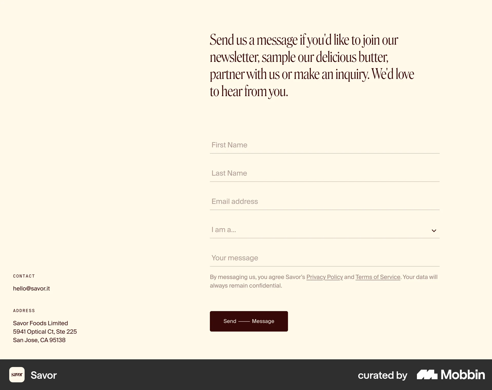
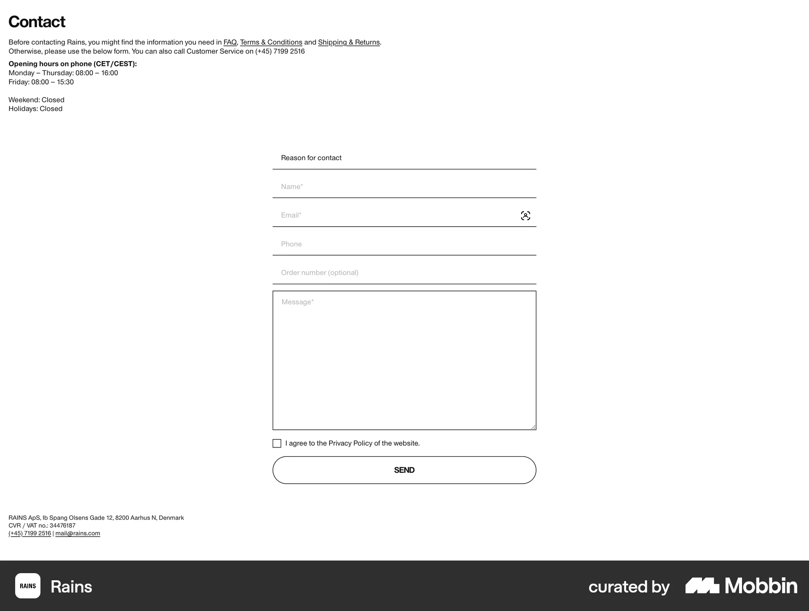
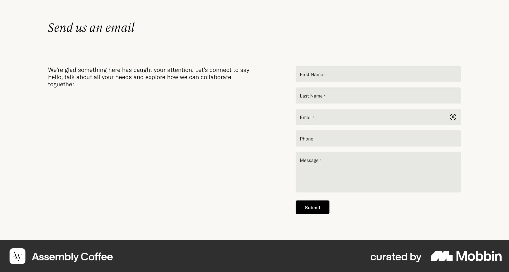

A quiet invitation at the end of the page.
Footer contact form research for Moriz Studio · 12 October 2026
Use generous space, thin field rules, persistent labels and a small outlined action. Adapt the references to the existing Hebrew typography and both site themes.
An open two-column composition with restrained copy, generous space, thin rules beneath the fields and a small send action. Borrow the quiet rhythm and field treatment; retain Moriz typography and omit the category dropdown.

A sparse contact page with underlined text fields, a distinct message area and an outlined send button. Borrow the restrained controls; use persistent labels instead of placeholder-only instructions.

An invitation and explanatory paragraph sit beside a compact enquiry form. Borrow the readable separation between invitation and task; keep one full-name field and use rules rather than filled input boxes.
